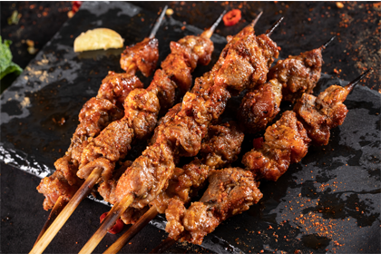
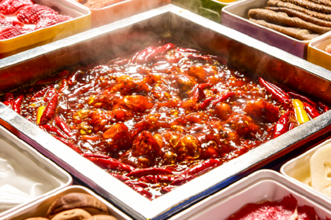

小菜园
弘阳广场吃饭排队，排的最多的就是小菜园了吧， 铁板牛仔骨，好吃，肉嫩，不老，可以咬的动。铁板虾每只虾肉质紧实，入口、 很有味道。那个鸭子真的太美了,分量超足，外酥里嫩，像是北京烤鸭蘸了南京 的卤子!还有红烧肉，下饭的极品!肥瘦相间，色泽诱人，入口就一个字,香!
北疆饭店
餐厅从里到外服务员的服装都是新疆风格充满了异域 风情菜品大多是跟羊肉有关。其实对于我这种不热心羊肉的人来说有点难，还好有 大盘鸡总算可以畅快吃肉了。羊肉我没吃朋友觉得不错没有膻味，吃完就像游荡在 大草原上。羊肉串比外面的贵5块钱一串 现烤的味道还不错应该是真羊肉
海底捞
谁能不爱海底捞呢?答案是没有人。虾滑、牛肉、羊肉依然好品质。 荠菜丸子好好吃啊，吃了一个就停不下来了。年糕蘸了花生碎粒真是太美味了。笋子鲜嫩， 血旺新鲜，冬瓜海芾菠菜豆腐皮都好吃，水果里的柚子特别好品质，果肉饱满，不酸。帮我 们开酒、醒酒都很热情，好感满分!
